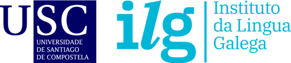
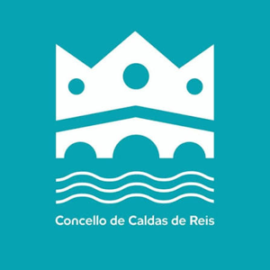
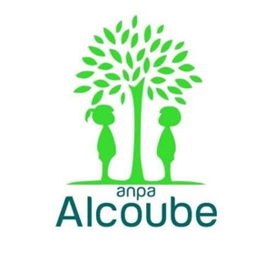
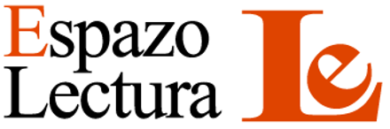

Obradoiros e programas de Educación Sexual Integral para concellos, centros educativos e universidades de Galicia. Con rigor científico, mirada feminista e unha aula onde se pode preguntar todo.
Acompaño a quen aposta pola educación sexual integral nas súas aulas
Concellos
Técnicas de igualdade e servizos municipais
Programas de prevención que chegan a varios centros do municipio á vez, charlas para familias e a obra de teatro «Quen ben te quere farache rir». Unha soa interlocutora, datas agrupadas e orzamento pechado.
Centros educativos
Dirección, orientación e profesorado
Obradoiros para cada etapa, de 5.º de Primaria a FP, que preparo a partir do que o centro me conta na solicitude. Ao rematar, recibides unha memoria co traballado para darlle continuidade.
Universidades
Unidades de igualdade
Formación para alumnado, profesorado e persoal. Son formadora coa que conta a Unidade de Igualdade da UVigo e docente no seu Programa Universitario de Maiores.
Obradoiros para a aula
Un obradoiro para cada etapa
Sesións participativas, con dinámicas e materiais propios, adaptadas á idade e á realidade de cada grupo.
5.º e 6.º de Primaria1 sesión · 100 min
O meu corpo, o meu lar
Acompañar os cambios do corpo desde a autoestima, a empatía e o respecto, antes de que chegue a adolescencia.
Que consegue o alumnado
Coida como fala do corpo e cuestiona a presión estética.
Distingue cando unha «broma» fai dano e ponse do lado do respecto.
Traballo por aula desde Infantil ata a universidade. Precisades algo máis amplo? Combino obradoiros, charlas para familias e formación para o profesorado nun programa de centro ou municipal á medida.
Universidades, concellos e centros educativos que xa me elixiron
Universidade · Unidade de Igualdade
Colexio profesional
Universidade · Instituto

Concello

Concello
Mocidade
Familias

Entidade educativa
Cultura e lectura

Falaron do meu traballoO Blog · Colexio Oficial de Traballo Social de GaliciaGCienciaValmiñor TVTelemariñasInfoMiñoLa RegiónCódigo Cero
O que din os centros
Cando o obradoiro remata, a conversa continúa
Valoramos moi positivamente a súa colaboración docente. A súa achega sobre a sexualidade integral e a prevención comunitaria abre miradas moi necesarias, con rigor, claridade e unha metodoloxía práctica e transformadora.
Colexio Oficial de Traballo Social de Galicia
Levamos cinco anos acompañando á mocidade de Gondomar en torno á Educación Sexual Integral. O balance non podería ser máis claro: a mocidade si quere e necesita falar de sexualidade.
OMIX Gondomar · Concello de Gondomar
Presentou ferramentas e recursos prácticos de forma clara, dinámica e accesible para previr, identificar e responder ante a ciberviolencia sexual.
Instituto da Lingua Galega · USC
Conseguiu achegar cuestións de gran relevancia ás familias, fomentando a súa implicación e participación, desde unha perspectiva próxima e práctica.
ANPA Alcoube · CPI Curros Enríquez
Hoxe recibín moi boas achegas sobre o teu coloquio, a pesar de ser un público pouco falador. Deixaches boa pegada.
Concellería de Igualdade · Concello do Rosal
Abríchesme os ollos a moitos erros que cometía no día a día e dos que non era consciente. Unha charla deixa semente, e ti deixáchela.
Profesorado · Formación docente
Sabela demostra que é posible abordar temas complexos, sensibles e mesmo incómodos desde o humor, sen perder rigor nin profundidade.
Profesorado universitario · URJC
Sen dúbida, cando chegan os proxectos aos centros, distinguimos quen traballa desde o corazón.
Docente de Infantil · CEIP
Traballar con Sabela é garantía de implicación, creatividade, rigor e compromiso. Ten unha extraordinaria capacidade para conectar coas persoas novas e xerar espazos de confianza.
Leticia Costas · KIDCODE, colaboradora
Sobre min
Son Sabela Salgueiro. Traballo para que ningunha nena sufra violencia sexual.
Traballadora social, doutora e formadora, deseño e imparto formación en Educación Sexual Integral desde un enfoque biopsicosocial.
Doutora en Ciencias da Educación e do Comportamento pola Universidade de Vigo (2025), especializada en saúde, sexualidade e xénero.
Investigadora en violencia sexual, con publicacións en revistas científicas como Sexuality & Culture.
Formadora coa que conta a Unidade de Igualdade da UVigo e docente no seu Programa Universitario de Maiores.
Desde 2021 nas aulas, de Infantil á universidade, en Galicia e Guatemala. Máis de 40 centros educativos traballaron comigo.
Análise feminista
Como o patriarcado, os estereotipos e o poder condicionan a vivencia da sexualidade.
Ecotraballo social
A persoa en relación co seu grupo, o seu centro, a súa familia e o seu contorno.
Enfoque comunitario
Activamos recursos, pensamento crítico e responsabilidade colectiva.
Perspectiva integral
A sexualidade como realidade biopsicosocial: corpo, afectividade, relacións, pracer e saúde.
E ademais…
Nada de charlas teóricas. Dinámicas de grupo e elaboración colectiva: o alumnado é protagonista.
Adaptado a cada etapa. De Infantil á universidade, cunha linguaxe que se entende.
«Houbo un momento no que perdín a miña voz. E aí entendín o seu verdadeiro poder: nomear o que doe e acompañar outras persoas a facer o mesmo.»
Recurso gratuíto
Descarga gratis o manual Xogando limpo no amor
Un manual de aula para desmontar os mitos do amor romántico desde a Educación Sexual Integral. Pensado para profesorado, educadoras e técnicas de igualdade que queren traballar a igualdade de xénero, a coeducación e a prevención das (ciber)violencias sexuais.
Actividades prácticas para cuestionar os mitos e poñer o foco en relacións baseadas no respecto e na igualdade real.
Ferramentas coeducativas para traballar liberdade, autonomía e contexto patriarcal no día a día da aula.